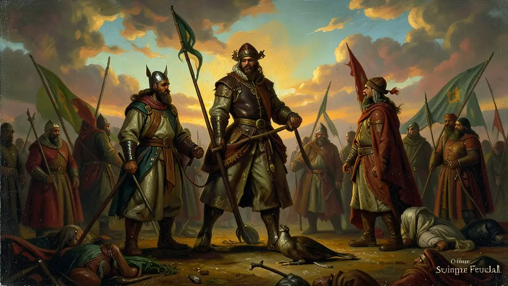
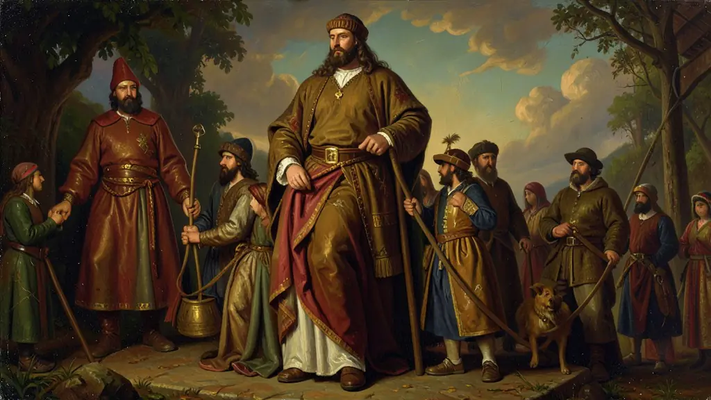
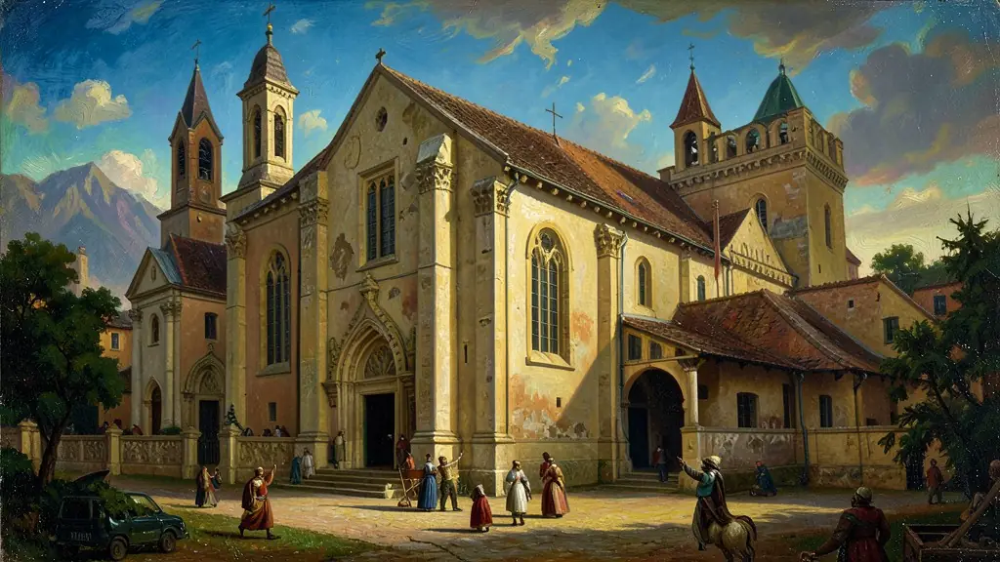

Capítulo 01
1. Suserania e Vassalagem: Laços de Honra
A política feudal era um contrato verbal e sagrado entre nobres. O suserano (superior) oferecia o feudo (benefício) ao vassalo (inferior). Em troca, o vassalo jurava apoio militar e presença na corte. Se um rei fosse suserano de muitos vassalos, ele tinha força; se não doasse terras, perdia o controle. Não havia um governo central forte; o poder estava espalhado por milhares de castelos independentes.

Capítulo 02
2. A Vida no Mansos: O Trabalho Servil
O feudo era dividido em Manso Senhorial (terras exclusivas do senhor), Manso Servil (onde o servo morava e produzia para si e para o senhor) e Manso Comunal (bosques e pastos comuns). O servo era um camponês que oferecia seu suor em troca de proteção contra bárbaros e piratas. Ele pagava a Talha (metade do que colhia) e a Corveia (trabalhava de graça no campo do senhor alguns dias por semana).

Capítulo 03
3. A Igreja Católica: O Monopólio da Verdade
Se o nobre era o rei da terra, a Igreja era a rainha das almas. O Papa tinha o poder de excomungar reis, isolando-os politicamente. Os mosteiros eram os únicos lugares onde se preservava o conhecimento clássico (monges copistas), mas a ciência era vista com desconfiança se questionasse as escrituras. A cultura medieval era profundamente simbólica e voltada para a vida após a morte (Estratégia do Medo do Inferno).

Capítulo 04
4. As Cruzadas e o Renascimento das Cidades
Atendendo ao chamado do Papa Urbano II, milhares de cavaleiros partiram para Jerusalém. Embora tenham fracassado militarmente, as Cruzadas trouxeram especiarias, tecidos e livros do Oriente. Isso estimulou o comércio no Mediterrâneo (liderado por Veneza e Gênova) e permitiu que o camponês fugisse do feudo para vender mercadorias nas feiras urbanas. Era o início do fim da autossuficiência feudal.
Capítulo 05
5. A Peste Negra e o Fim do Mundo
Em 1347, pulgas de ratos vindas do Oriente trouxeram a Peste Bubônica. Sem higiene e ciência, a doença matou 25 milhões de europeus em cinco anos. A morte não escolhia classe social, o que abalou a fé cega na Igreja e na proteção dos nobres. Com menos gente para trabalhar, os servos sobreviventes passaram a exigir melhores condições, gerando revoltas camponesas sangrentas (Jacqueries) que destruíram a estrutura do feudo.
O feudalismo não foi um sistema uniforme em toda a Europa, mas uma resposta descentralizada e agrária ao colapso das estruturas estatais romanas e às invasões do século IX. A base do sistema era o contrato de suserania e vassalagem, uma rede de fidelidade militar entre nobres. Em troca de proteção e da concessão de terras (feudos), o vassalo devia auxílio militar ao suserano. Essa fragmentação do poder político significava que o 'rei' era apenas o primeiro entre pares, possuindo autoridade limitada fora de seus próprios domínios diretos.
A sociedade feudal era rigidamente estamental, dividida entre 'os que oram' (clero), 'os que lutam' (nobreza) e 'os que trabalham' (camponeses e servos). A Igreja Católica desempenhava o papel de principal força unificadora da cristandade ocidental, detendo o monopólio do conhecimento e ditando as normas morais e sociais. Para o servo, a vida estava ligada à terra por obrigações como a corveia e a talha, em um regime que não era de escravidão total, mas de uma falta de liberdade jurídica e espacial que amarrava o indivíduo ao senhor feudal.
O renascimento urbano e comercial, a partir do século XI, marcou o início da crise do sistema feudal. O crescimento das cidades (burgos) e o surgimento de uma nova classe de mercadores criaram tensões com os senhores feudais, que viam o comércio como uma ameaça à ordem agrária tradicional. Esse processo, aliado à crise do século XIV (Peste Negra, fome e revoltas camponesas), enfraqueceu os antigos laços de servidão e abriu caminho para a centralização monárquica, transformando o feudalismo no substrato sobre o qual nasceriam os Estados Nacionais Modernos.
Fonte: BLOCH, Marc. A Sociedade Feudal. Lisboa: Edições 70, 1982.
Atividades interativas
Questões para fixar
O sistema feudal era caracterizado por uma sociedade estamental e politicamente descentralizada. Qual era o principal laço que unia a classe da nobreza guerreira?
A crise do século XIV foi composta por três grandes fatores que desestruturaram a Europa Medieval. Quais foram eles?